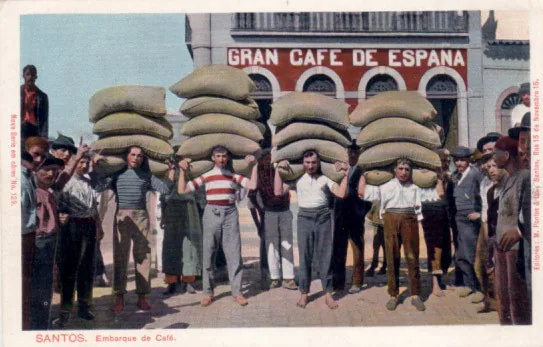
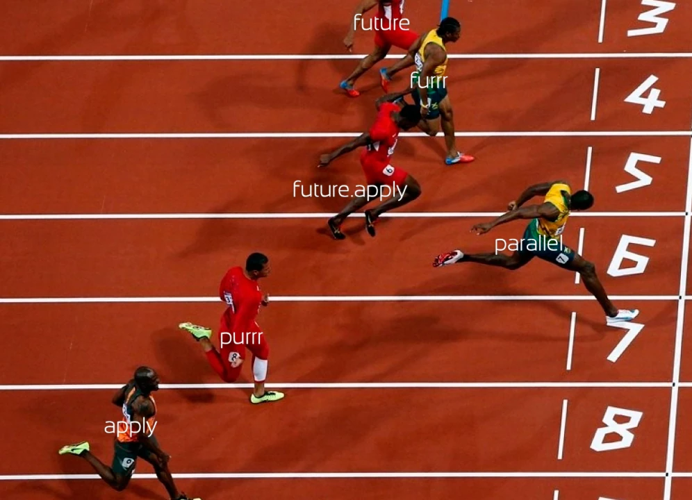

Как ускорить работу с API на языке R с помощью параллельных вычислений, на примере API Яндекс.Директ (Часть 2)
В прошлой статье я рассказал о том, что такое многопоточность, и привёл примеры её реализации на языке R при работе с API Яндекс. Директ с помощью пакетов doSNOW, doParallel и конструкции foreach.
Данная статья является продолжением, но может быть рассмотрена как автономное руководство по многопоточности в R. К её написанию меня подтолкнули комментарии полученные к первой части (тут отдельная благодарность Alexey_mosc, SatCat, Ananiev_Genrih), в которых мне привели ряд пакетов, представляющих более современный подход к реализации многопоточности в R, о них далее и пойдёт речь.

Содержание
- Задача
- Подготовка
- Пример решения в последовательном режиме обработки, функция sapply и пакет purrr
- Функция sapply
- Пакет purrr
- Многопоточные варианты решения задачи по сбору ключевых слов из Яндекс. Директ
- Пакет parallel
- Пакет future
- Обёртки над future
- Тест скорости
- Заключение
Задача
В качестве примера мы возмём задачу рассмотренную в прошлой публикации, т.е. в многопоточном режиме собрать список ключевых слов из 4ёх рекламных аккаунтов Яндекс. Директ.
Для работы с API Яндекс. Директ мы будем использовать пакет ryandexdirect. Официальная документация к нему находится по ссылке, но для реализации описанной задачи нам понадобится всего 2 функции:
yadirAuth— авторизация в API Яндекс. Директ;yadirGetKeyWords— Загрузка списка ключевых слов из рекламных аккаунтов.
Я не просто так выбрал именно процесс загрузки ключевых слов, дело в том, что это одна из наиболее длительных операций в API Яндекс. Директ. Во вторых во всех аккаунтах количество ключевых слов разное, следовательно и время на выполнение этой операции для каждого аккаунта будет сильно отличаться, в нашем случае от 1 до 20 секунд.
Подготовка
Изначально вам необходимо установить все рассматриваемые в этой статье пакеты, для этого можно воспользоваться приведённым ниже кодом.
Код 1: Установка пакетов
# Установка нужных пакетов
install.packages("ryandexdirect")
install.packages("tictoc")
install.packages("rbenchmark")
install.packages("dplyr")
install.packages("purrr")
install.packages("future")
install.packages("promises")
install.packages("furrr")
install.packages("future.apply")
Чтобы вам были доступны функций пакета, его необходимо подключить с помощью команды library. Для удобства я буду отдельно подключать все необходимые пакеты в каждом приведённом примере кода.
Создаём вектор состоящий из логинов Яндекс. Директ, из которых в последствии мы будем запрашивать ключевые слова:
Код 2: Создание вектора логинов
logins <- c("login1",
"login2",
"login3",
"login4")
Для работы с API Яндекс. Директ предварительно требуется пройти авторизацию под каждым аккаунтом, для этого можно воспользоваться следующей конструкцией:
Код 3: Авторизация в API Яндекс. Директ
lapply(logins,
function(l) {
yadirAuth(Login = l)})
После запуска приведенного выше кода, для авторизации под каждым аккаунтом будет открыт браузер. Вы подтвердите разрешение для ryandexdirect на доступ к вашим рекламным материалам. Будете перенаправлены на страницу, на которой вам надо скопировать код подтверждения. Введя его в консоль R завершите процесс авторизации. Данная операция повторяется для каждого логина который вы указали при создании вектора logins.
Некоторых пользователей, в процессе авторизации, может смущать факт редиректа на сторонний ресурс, но никакой опасности для ваших аккаунт в этом нет, более подробно эту тему я описал в статье “Насколько безопасно использовать R пакеты для работы с API рекламных систем”.
Далее мы рассмотрим несколько примеров реализации описанной задачи. Каждый из которых будет начинаться с примера кода, и дальнейшего его объяснения. Я думаю, такой вариант будет наиболее удобен для восприятия.
Пример решения в последовательном режиме обработки, функция sapply и пакет purrr
В прошлой статье в качестве примера я приводил решение с использованием цикла for. Поскольку мы рассматривали многопоточность с использованием пакета foreach, который по синтаксису напоминает циклы, там этот пример был уместен не смотря на то, что использование циклов не приветствуется пользователями R.
Пакеты которые мы рассмотрим в этой статье, по синтаксису больше напоминают функции семейства apply, поэтому и пример решения в последовательном режиме я приведу с их использованием.
Функция sapply
Для оценки времени выполнения команд, в каждом из рассматриваемых подходов, мы будем использовать пакет
tictoc.
Код 4: Пример решения в последовательном режиме с помощью функции sapply
library(tictoc)
library(dplyr)
tic() # включаем таймер
kw.sapply <-
sapply(
logins, # Список логинов, который будет перебираться функцией
function(x) # Анонимная функция которая будет выполнена по очереди
# с каждый указанном логином
{ yadirGetKeyWords(Login = x) %>%
mutate(login = x) },
simplify = FALSE # Режим упрощенного вывода результата
)
toc() # время выполнения
# приводим полученный результат к табличному виду
result.sapply <- do.call("rbind", kw.sapply)
Время выполнения: 39.36 sec elapsed
По началу синтаксис функций семейства apply воспринимается не так легко как синтаксис циклов, но на самом деле всё достаточно просто.
sapply(X, FUN)
Где:
- X — Объект, элементы которого мы будем перебирать и по очереди использовать на каждой итерации, в цикле
forэто выглядело так:for(i in X); - FUN — Функция, в которую мы будем по очереди подставлять каждый элемент объекта X, если провести аналогию с
for, то это тело цикла.
В примере Код 4, созданный ранее вектор logins передаётся в аргумент X. Каждый элемент вектора logins по очереди передаётся в качестве единственного аргумента анонимной функции function(x) { yadirGetKeyWords(Login = x) %>% mutate(login = x) }, которая была передана в аргумент FUN.
Т.е. sapply выполнит 4 раза указанную в FUN функцию, подставляя в неё по очереди логины, и вернёт полученный результат в виде списка (объект класса list) состоящего из 4ёх элементов. Каждый элемент это таблица со списком ключевых слов полученных из аккаунта на каждой итерации.
yadirGetKeyWords(Login = "login1") %>% mutate(login = "login1")yadirGetKeyWords(Login = "login2") %>% mutate(login = "login2")yadirGetKeyWords(Login = "login3") %>% mutate(login = "login3")yadirGetKeyWords(Login = "login4") %>% mutate(login = "login4")
Полученный с помощью sapply объект имеет следующую структуру:
summary(kw.sapply)
Length Class Mode
login1 19 data.frame list
login2 19 data.frame list
login3 19 data.frame list
login4 19 data.frame list
В завершении этого примера команда result.sapply <- do.call("rbind", kw.sapply), объединяет все 4 элемента списка kw.sapply в один фрейм result.sapply.
# A tibble: 6,804 x 1
result.sapply$Id $Keyword $AdGroupId $CampaignId $ServingStatus $State
<dbl> <fct> <dbl> <int> <fct> <fct>
1 15164230566 Недвижи~ 3597453985 39351725 ELIGIBLE ON
2 15164230567 Жилье в~ 3597453985 39351725 ELIGIBLE ON
3 15164230568 Купить ~ 3597453985 39351725 ELIGIBLE ON
4 15164230569 Продажа~ 3597453985 39351725 ELIGIBLE ON
5 15164230570 Болгарс~ 3597453985 39351725 ELIGIBLE ON
6 15164230571 Купить ~ 3597453985 39351725 ELIGIBLE ON
7 15164230572 Продажа~ 3597453985 39351725 ELIGIBLE ON
8 15164230573 Цены на~ 3597453985 39351725 ELIGIBLE ON
9 15164230574 Стоимос~ 3597453985 39351725 ELIGIBLE ON
10 15164230575 Сколько~ 3597453985 39351725 ELIGIBLE ON
# ... with 6,794 more rows, and 13 more variables: $Status <fct>,
# $StrategyPriority <fct>, $StatisticsSearchImpressions <int>,
# $StatisticsSearchClicks <int>, $StatisticsNetworkImpressions <int>,
# $StatisticsNetworkClicks <lgl>, $UserParam1 <chr>, $UserParam2 <chr>,
# $ProductivityValue <lgl>, $ProductivityReferences <lgl>, $Bid <dbl>,
# $ContextBid <dbl>, $login <chr>
Помимо sapply в семейство функций *apply входят: apply, lapply, vapply, mapply и другие.
Пакет purrr
Код 5: Пример решения с помощью функций пакета purrr
library(purrr)
library(dplyr)
library(tictoc)
tic() # включаем таймер
result.purrr <-
map_df(
logins, # Список логинов, который будет перебираться функцией
~ # Сокращение от function(.x)
{ yadirGetKeyWords(Login = .x) %>%
mutate(login = .x) }
)
toc() # время выполнения
Время выполнения: 35.46 sec elapsed
Пакет purrr входит в ядро библиотеки tidyverse, автором которой является Хедли Викхем.
По смыслу и синтаксису основные функции пакета очень похожи на sapply, основное его преимущество заключается в следующем:
- Функции разделены на семейства
map,map2,pmap,walkи так далее, отдельные функции входящие в одно семейство возвращают результат в разных форматах: chr, dbl, int, df и т.д.; - Функции семейства
map2позволяют перебирать элементы (итерироваться) одновременно двух объектов; - Функции семейства
pmapпозволяют одновременно перебирать элементы любого количества объектов. На вход в аргумент .l (аналог аргумента X в sapply) вы можете передавать таблицу, каждый столбец которой будет содержать значения, по которым вы будете итерироваться, и которые будут подставлены по очереди в одноимённые аргументы функции, переданной в .f (аналог FUN из sapply).
В какой ситуации нам понадобиться перебирать элементы нескольких объектов. Например, вы работаете с несколькими агентскими аккаунтами, и рекламные аккаунты из которых требуется получить список ключевых слов разбросаны между ними. В таком случае вы можете создать вектор из названий агентских аккаунтов, и итерироваться по нему, параллельно тому как вы перебираете логины рекламных аккаунтов.
Код 6: Пример работы с несколькими агентскими аккаунтами
library(purrr)
# создаём вектор соответствующих агентских аккаунтов
agencies <- c("agency1",
NA,
"agency2",
"agency1")
# собираем данные о ключевых словах
# из рекламных кабинетов разбросанных по разным агентским аккаунтам
result.pmap2 <- map2_df(.x = logins,
.y = agencies,
~
{ yadirGetKeyWords(Login = .x,
AgencyAccount = .y) %>%
mutate(login = .x) })
А теперь представим ситуацию, что вы при авторизации под разными аккаунтами сохраняли файл с учётными данными в разных папках, тогда вам потребуется итерироваться сразу по трём объектам: логины рекламных аккаунтов, логины агентских аккаунтов, путь в которых хранится файл с учётными данными. Реализовать это можно с помощь. функций семейства pmap.
Код 7: Пример работы с функцией pmap
library(purrr)
# создаём вектор, содержащий путь к папке где храняться
# учётные данные для каждого аккаунта
TokenPath <- c("C:\\proj1\\tokens",
"C:\\yandex\\token",
"C:\\yandex\\token",
"C:\\my_yandex_acoount")
# собираем данные
pmap.result <- pmap_df(list(Login = logins,
AgencyAccount = agencies,
TokenPath = TokenPath),
yadirGetKeyWords)
Соответственно результатом выполнения функций map_df, map2_df и pmap_df является дата фрейм, и при их использовании последний шаг из примера с sapply (do.call("rbind", kw.sapply)) не требуется.
Код стал компактнее, и выполнился немного быстрее, но тем не менее оба описанных подхода, sapply и purrr, выполняют сбор ключевых слов из каждого аккаунта последовательно. Поэтому общее время выполнения этой операции равняется сумме длительностей выполнения сбора данных из всех четырёх аккаунтов.
Time[total] = Time[login1] + Time[login2] + Time[login3] + Time[login4]
Многопоточные варианты решения задачи по сбору ключевых слов из Яндекс. Директ

Итак, если вы уже читали первую статью, то знаете, что у многопоточного режима работы есть несколько особенностей:
- Каждый поток запускается в отдельном R сеансе с чистым рабочим окружением.
- По той же причине в отдельный запущенный процесс, по умолчанию не передаются подключенные ранее пакеты.
Экспорт объектов созданных в рабочем окружении, и подключение пакетов в каждом подходе реализовано по разному, далее мы рассмотрим их более детально.
Пакет parallel
Данный пакет впервые был включён в комплектацию R в версии 2.14.0 и по сей день поставляется вместе с самим R.
Код 8: Пример решения задачи через пакет parallel
library(parallel)
library(tictoc)
# создаём кластер
cl <- makeCluster(4)
# экспортируем в кластер нужные объекты
clusterExport(cl = cl, varlist = "logins")
# задаём команды, которые необходимо выполнить при запуске
# каждого процесса, а нашем случае это подключения пакета ryandexdirect
clusterEvalQ(cl = cl, {
library(ryandexdirect)
library(dplyr)
}
)
tic() # включаем таймер
parallel.kw <- parSapplyLB(cl = cl, # Кластер процессов
X = logins, # Объект, элементы которого будем перебирать
FUN = function(x) { # Функция в которую будет подставляться
# по очереди каждый элемент объекта X
yadirGetKeyWords(Login = x) %>%
mutate(login = x)
},
simplify = F) # Упрощённый вывод результата
toc() # смотрим за временем выполнения
# останавливаем кластер
stopCluster(cl)
# приводим результат к табличному виду
result.parallel <- dplyr::bind_rows(parallel.kw)
Время выполнения: 16.75 sec elapsed
Давайте попробуем разобрать Код 8. Функция makeCluster создаёт кластер из 4 процессов. В созданный кластер с помощью функции clusterExport мы можем экспортировать объекты из нашего основного рабочего окружения, для этого надо использовать её аргументы:
- cl — Кластер, в который мы будем экспортировать объекты
- varlist — Текстовый вектор, содержащий имена объектов, которые необходимо экспортировать в каждый процесс кластера.
Один из способов подключения нужных пакетов на каждом узле кластера — использовать функцию clusterEvalQ. В нашем примере мы используем её для подключения пакетов, но вы можете написать внутри clusterEvalQ любой R код, и он будет запускаться при старте каждого узла кластера. Аргументы этой функции достаточно очевидны, вам необходимо задать кластер и команды которые будут в нем выполняться.
parSapplyLB это параллельная версия функции sapply с балансировкой нагрузки между узлами кластера, используют её также, но вам необходимо с помощью аргумента cl указать нужный кластер.
Также в parallel есть и другие распараллеленные варианты функций семейства *apply: parLapply, parSapply, parApply и др.
parSapply отличается от parSapplyLB только тем, что у неё нет балансировки нагрузки на узлы кластера.
Функция stopCluster служит для остановки созданного кластера.
Последней командой, dplyr::bind_rows(parallel.kw) мы объединяем полученный с помощью parSapplyLB объект parallel.kw в одну таблицу.
Для Linux в parallel есть отдельные функции: mclapply, mcmapply, mcMap. Зачастую в этой операционной системе команды выполняются быстрее, а код становится более компактным.
Код 9: Решение с помощью функции mclapply для Linux
library(parallel)
library(tictic)
library(dplyr)
library(ryandexdirect)
tic()
mclapply.kw <- mclapply(logins,
FUN = function(x) { # Функция в которую будет подставляться
# по очереди каждый элемент объекта X
yadirGetKeyWords(Login = x) %>%
mutate(login = x)
}, mc.cores = 4)
toc()
При использовании этих функций нет необходимости запускать кластер с помощью команды makeCluster т.к. количество узлов вы задаёте с помощью аргумента mc.cores. Так же нет необходимости в подключении пакетов и экспорте объектов, эти операции выполняются автоматически.
Пакет future
Один из наиболее современных подходов к асинхронному программированию в R.
Код, который в параллельном режиме решит нашу задачу с помощью future достаточно сложен для понимания. Поэтому давайте разберём его работу на более простом примере, запросим список ключевых слов из одного аккаунта.
Код 10: Простейший пример использования пакета future
library(future)
# Мультисессионный режим работы
plan(multiprocess)
# Запускаем процесс загрузки ключевых слов
# в фоновом режиме
future.kw <- future({yadirGetKeyWords(Login = logins[4])},
packages = "ryandexdirect",
globals = "logins")
# Проверка статуса выполнения выражения
resolved(future.kw)
# Получаем результат выполнения выражения
future.result.1 <- value(future.kw)
Попробуем разобраться с примером Код 10. Функция plan позволяет вам устанавливать и менять режим выполнения заданных выражений, вот основные из них:
- sequential — Это обычный режим работы R, команды выполняются последовательно в текущей сессии;
- multisession — Параллельный режим, команды будут выполняться в запущенных в фоновом режиме сеансах на текущей машине, при этом ваш рабочий сеанс не будет блокироваться;
- cluster — Параллельный режим, команды будут выполняться на текущей или удалённой машине, аналогично тому, как это реализовано в пакете
parallel.
Весь пакет future основан на выполнении команд в фоновых процессах без блокировки текущего сеанса. Запускать выполнение команд следует одноимённой функцией future, поэтому когда мы запускаем команду:
future({yadirGetKeyWords(Login = logins[4])},
packages = "ryandexdirect",
globals = "logins")
Наш текущий сеанс работы в R не блокируется, а команда выполняется в запущенной в фоновом режиме, другой R сессии.
Проверить текущее состояние процесса выполнения заданного выражения можно с помощью функции resolved. И наконец для получения результата выполнения future используется функция value. Если функцию value запустить раньше, чем ваш future выполниться в параллельно запущенном сеансе, то текущий рабочий сеанс будет заблокирован до тех пор, пока выражение параллельной сессии не завершит работу.
Наиболее продвинутым примером работы является использование future совместно с promises.
Код 11: Пример совместного использования пакетов future и promises
library(future)
library(promises)
# Мультисессионный режим работы
plan(multiprocess)
# Запускаем процесс загрузки ключевых слов
# в фоновом режиме
future.kw <- future({suppressMessages(
yadirGetKeyWords(Login = logins[4]))},
packages = "ryandexdirect",
globals = "logins") %...>% # Оператор который ждёт выполнения future,
# и передаёт его результат дальше
nrow() %...>%
paste("words loaded") %...>%
print()
Пакет promises предоставляет набор конвеерных операторов отлично дополняющих функционал future.
В примере Код 11 мы в фоновом режиме запускаем процесс загрузки ключевых слов из одного рекламного аккаунта. Далее конвеерный оператор %...>% без блокировки рабочего сеанса ждёт выполнения future, и выполняет оставшиеся операции. В результате выполнения кода, по завершению работы future, в консоль будет выведено количество ключевых слов из заданного аккаунта:
[1] "1855 words loaded"
В конце статьи будет продемонстрирован более наглядный пример связки
futureиpromises.
По умолчанию пакет future сам экспортирует всё рабочее пространство в каждую параллельно запущенную сессию, но вы самостоятельно можно задавать список объектов для экспорта с помощью аргумента globals.
Для подключения пакетов в future следует передать вектор содержащий их названия в аргумент packages.
Теперь вернёмся к нашей задаче, следущий пример кода в параллельном режиме загрузит список ключевых слов из 4ёх аккаунтов:
Код 12: Пример решения задачи с помощью пакета future
library(future)
library(tictoc)
# план обработки
plan("multisession", workers = 4)
tic() # запускаем таймер
futs <- lapply(logins, # Объект элементы которого будем перебирать
function(i) # Функция которая будет выполняться под каждый элемент
# Создаём фьючерс
future({ yadirGetKeyWords(Login = i) %>%
mutate(login = i) },
packages = c("ryandexdirect",
"dplyr")))
completed <- sapply(futs, resolved) # проверка выполненных заданий
kw <- lapply(futs, value) # получения всех результатов
toc() # смотрим время работы
# преобразуем результат в таблицу
result.future <- dplyr::bind_rows(kw)
Время выполнения: 14.83 sec elapsed
Для загрузки списка ключевых слов в многопоточном режиме из всех перечисленных в векторе logins рекламных аккаунтов необходимо запустить в фоновом режиме выполнение отдельной future. В примере Код 12 мы реализуем это с помощью функции lapply.
Результатом работы lapply будет список запущенных future. Проверить статус каждой можно с помощью команды sapply(futs, resolved), которая вернёт логический вектор где TRUE будет означать, что future выполнена, а FALSE, что future на данный момент в процессе выполнения.
Для получения результатов из каждой future, после завершения их работы, мы используем команду lapply(futs, value).
В конце нам остаётся соединить полученные результаты в одну таблицу: result.future <- dplyr::bind_rows(kw).
Обёртки над future
Обёртка в текущем контексте это пакет, написанный на основе другого пакета (в нашем случае
future), изменяющий интерфейс взаимодействия с его функционалом.
Пакет future.apply
future.apply обвёртка написанная автором самого future, Хенриком Бенгтссоном.
Код 13: Пример решения задачи с помощью пакета future.apply
library(future.apply)
library(tictoc)
# устанавливаем план обработки
plan("multisession", workers = 4)
tic() # запускам таймер
kw.future.apply <- future_sapply(logins, # объект который будем перебирать, вектор логинов
function(x) {
# функция запрашивающая ключевые слова
yadirGetKeyWords(Login = x) %>%
mutate(login = x)
},
simplify = FALSE, # Упрощённый вывод результата
# подключение пакетов
future.packages = c("ryandexdirect",
"dplyr"),
future.globals = TRUE
)
toc() # смотрим время работы
Время выполнения: 17.28 sec elapsed
В примере Код 13 видно, что future.apply позволяет решить нашу задачу более компактно чем пакет future, но при этом внутри он использует тот же функционал.
Сначала мы задаём параллельный режим обработки состоящий из 4ёх процессов: plan("multisession", workers = 4).
future_sapply по очереди перебирает элементы вектора logins запрашивая список ключевых слов. Т.е. делает в точности, тоже самое, что описанная в самом начале статьи функция sapply, но в многопоточном режиме.
Для подключения пакетов внутри параллельной future_sapply необходимо использовать аргумент future.packages. Для передачи объектов из глобального окружения в каждый запущенный процесс служит аргумент future.globals. По умолчанию он экспортирует всё рабочее окружение, но вы можете менять это поведение задав текстовый вектор из имён нужных вам объектов.
Пакет furrr
Ещё одна обёртка над future. Я не зря в начале статьи рассказал о пакете purrr, так вот furrr является его многопоточным братом близнецом.
Код 14: Пример решения с помощью пакета furrr
library(furrr)
library(tictoc)
# создаём кластер
cl <- parallel::makeCluster(4)
plan(cluster, workers = cl)
tic() # запускаем таймер
furrr.kw <-
future_map(logins,
~ # сокращение от function(.x)
yadirGetKeyWords(Login = .x) %>%
mutate(login = .x),
.options = future_options(packages = c("ryandexdirect",
"dplyr"),
globals = c()))
toc() # смотрим время выполнения
# соединяем результат в единую таблицу
result.furrr <-dplyr::bind_rows(furrr.kw)
Время выполнения: 15.45 sec elapsed
furrr предоставляет в параллельном режиме почти весь набор функций из purrr. При этом и синтаксис purrr полностью сохранён, но добавлен ряд аргументов для работы с настройками параллельных процессов.
Для изменения различных опций каждого узла запущенного кластера служит аргумент .options. Передав в качества значения .options функцию future_options вы можете инициализировать подключение пакетов, и передачу объектов из глобального окружения в узлы кластера.
В примере Код 14 мы использовали аргументы packages и globals выполнили эту операцию так:
.options = future_options(packages = c("ryandexdirect",
"dplyr"),
globals = c())
Тест скорости
Как и в прошлой статье для тестирования будем использовать пакет rbenchmark.
Немного выше я обещал, что в конце статьи будет более наглядный пример взаимодействия future с promises. Тест скорости выполнения нашей задачи по всем приведённым в статье подходам является идеальным для этого примером.
Дело в том, что тест скорости с 20 повторениями каждого из подходов с участием 4ёх рекламных аккаунтов очень дорогая (длительная) операция.
Длительность теста скорости = (T[подход1] * 20) + (T[подход2] * 20) + (T[подходN] * 20)
Код 15: Тест скорости и наглядный пример совместного использования future и promises
library(furrr)
library(parallel)
library(dplyr)
library(future)
library(ryandexdirect)
library(tictoc)
library(rbenchmark)
# вектор логинов
logins <- c("login1",
"login2",
"login3",
"login4")
# создаём обёртку для каждого из описанных подходов
# функции написанные под параллельные вычисления имеют префикс par
par.furrr <- function(logins) {
cl <- parallel::makeCluster(4)
plan(cluster, workers = cl)
furrr.kw <-
future_map(logins,
~
yadirGetKeyWords(Login = .x) %>%
mutate(login = .x),
.options = future_options(packages = c("ryandexdirect",
"dplyr"),
globals = c()))
result.furrr <-dplyr::bind_rows(furrr.kw)
}
par.future <- function(logins) {
plan("multisession", workers = 4)
futs <- lapply(logins,
function(i)
future({ yadirGetKeyWords(Login = i) %>%
mutate(login = i) },
packages = c("ryandexdirect",
"dplyr")))
completed <- sapply(futs, resolved)
kw <- lapply(futs, value)
result.future <- dplyr::bind_rows(kw)
}
par.future.apply <- function(logins) {
plan("multisession", workers = 4)
kw.future.apply <- future_sapply(logins,
function(x) {
yadirGetKeyWords(Login = x) %>%
mutate(login = x)
},
simplify = FALSE,
future.packages = c("ryandexdirect",
"dplyr"),
future.globals = TRUE
)
result.future.apply <- dplyr::bind_rows(kw.future.apply)
}
par.parallel <- function(logins) {
cl <- parallel::makeCluster(4)
clusterExport(cl = cl, varlist = "logins")
clusterEvalQ(cl = cl, {
library(ryandexdirect)
library(dplyr)
}
)
parallel.kw <- parSapplyLB(cl = cl,
X = logins,
FUN = function(x) {
yadirGetKeyWords(Login = x) %>%
mutate(login = x)
},
simplify = F)
stopCluster(cl)
result.parallel <- dplyr::bind_rows(parallel.kw)
}
# Функция для решения задачи в последовательном режиме имеют префикс seq
seq.apply <- function(logins) {
kw.sapply <-
sapply(
logins,
function(x)
{ yadirGetKeyWords(Login = x) %>%
mutate(login = x) },
simplify = FALSE
)
result.sapply <- do.call("rbind", kw.sapply)
}
seq.purrr <- function(logins) {
kw.purrr <-
map_df(
logins,
~
{ yadirGetKeyWords(Login = .x) %>%
mutate(login = .x) }
)
result.purrr <- do.call("rbind", kw.purrr)
}
# запускаем тест скорости с помощью пакета rbenchmark
# используем связку future + promises
# для того, что бы не блокировать текущую сессию
# и по завершению теста результат вывелся в консоль автоматически
plan(list(tweak(multisession, workers = 2), tweak(multisession, workers = 4)))
tic()
speed.test <-
future({
# запускаем тест скорости сбора данных по двум написанным функциям
within(benchmark(furrr = par.furrr(logins),
future = par.future(logins),
future.apply = par.future.apply(logins),
parallel = par.parallel(logins),
apply = seq.apply(logins),
purrr = seq.purrr(logins),
replications = c(20),
columns = c('test',
'replications',
'elapsed'),
order = c('elapsed',
'test')),
{ average = round(elapsed/replications, 2) })
},
packages = c("dplyr",
"ryandexdirect",
"rbenchmark",
"parallel",
"purrr",
"future",
"promises",
"furrr",
"future.apply"),
globals = c("logins",
"par.furrr",
"par.future",
"par.future.apply",
"par.parallel",
"seq.apply",
"seq.purrr")) %...>%
print() %...T>%
toc()
message("My Session is not blocked")
В моём примере тест скорости длился 3370 секунд, т.е. без малого час.
Результатом выполнения теста является фрейм с результатами теста выведенный в консоль. Для того, что бы моя рабочая сессия не блокировалась на это время я запустил тест как future в параллельной сессии, а с помощью операторов из пакета promises настроил поведение таким образом, что оно самостоятельно мониторит статус выполнения теста и по завершению выводит результаты и длительность его выполнения в консоль.
В это время мой сеанс работы не блокируется, и я могу продолжать в нём работу. Для демонстрации этого поведения я специально вывел сообщение “My Session is not blocked”, которое в коде идёт после запуска теста, но в консоль выводится до его результатов, т.к. сеанс при вычислении теста не блокируется.
Операторы promises которые я использую:
%...>%— По смыслу похож на%>%, но работает в фоновом режиме. Т.е. он за нас, в фоновом режиме постоянно выполняет функциюresolved, для проверки статуса выполненияfuture, и сразу после её выполенения получает результат аналогично функцииvalueи передаёт её результат в качестве первого аргумента следующей операции. В тесте скорости он ожидает его результата, после чего передаёт его на печать в функциюprint.%...T>%— Аналог%T>%, является разветвителем, и используется как правило для вывода в консоль промежуточной информации. Он выполняет текущую операцию, но в следующую операцию передаёт вместо результата выполнения текущей операции, результат полученный на предыдущей операции, т.е. в нашем примере т.к. функцияprintничего не возвращает мы просто её выполняем, и идём дальше, не забирая её результат.- %…T!% — Оператор который используется для отлавливания ошибок.
В Код 15 внутри plan мы используем функцию tweak (plan(list(tweak(multisession, workers = 2), tweak(multisession, workers = 4)))), такая конструкция позволяет создать иерархию процессов, изначально мы запускаем 2 процесса, далее внутри future каждый вызов будет распареллелин ещё на 4 процесса.
Результат выполнения приведённого выше кода теста скорости:
My Session is not blocked
test replications elapsed average
4 parallel 20 393.02 19.65
1 furrr 20 402.09 20.10
2 future 20 431.19 21.56
3 future.apply 20 432.29 21.61
5 apply 20 847.77 42.39
6 purrr 20 864.19 43.21
3370.55 sec elapsed

В моём случае, с незначительным преимуществом наиболее быстрым оказался пакет parallel, возможно за счёт балансировки нагрузки между узлами кластера. Второе место занял furrr, и немного медленнее были future и future.apply.
Но интерпретировать разницу в 1 секунду, в выполнении задачи среди разных подходов предоставляющих возможность параллельного её решения, было бы неправильно. Поскольку такая незначительная разница скорее всего имеет другую природу, как вариант различная нагрузка на API Яндекс. Директ в момент тестирования разных функций.
Тем не менее, даже на примере из 4ёх аккаунтов разница между параллельными и последовательными решениями двукратная, а на большем количестве аккаунтов она будет ещё более значима.
Заключение
Из материалов представленных в двух статьях вы ознакомились с множеством различных подходов параллелизации языка R, и о том как с её помощью ускорить запрос данных из различных API.
Подход достаточно универсален, и будет работать с API большинства известных вам сервисов. О пакетах для работы с множеством других рекламных платформ я писал в статье “Обзор R пакетов для интернет маркетинга, часть 1”.
Все описанные в двух статьях подходы можно сгруппировать следующим образом:
- doSNOW / doParallel + foreach
- future + promises
- future.apply / furrr
- parallel
Значительной разницы в скорости работы между описанными подходами нет, выбирать стоит тот, синтаксис которого для вас наиболее понятен и компактен.
В конце этой статьи я решил провести небольшой опрос, чтобы узнать какой из подходов для реализации многопоточности в R вы используете.